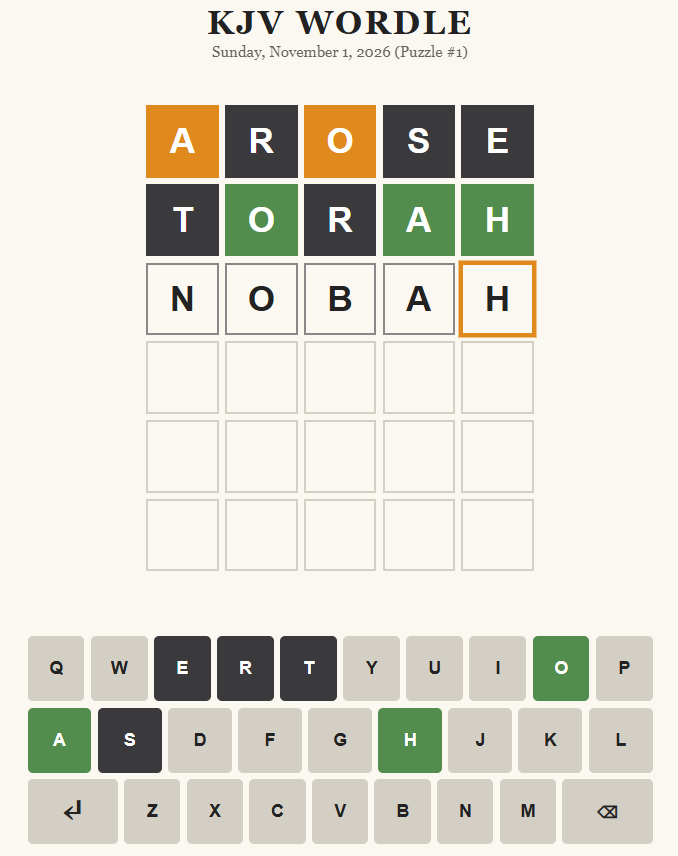

A new puzzle every day
Find the word
from Scripture.
Guess the hidden five-letter word from the King James Bible in six tries. Names, places, and the old words of the 1611 text are all fair game.

Thy word is a lamp unto my feet, and a light unto my path.PSALM 119:105
Why play
Five letters a day, from the Good Book
✦
Words from the KJV
Every answer comes from the King James Bible, from AARON to ZORAH. You’ll find old words like doeth and durst, and names like Caleb.
☼
One puzzle a day
Everyone gets the same word each day. Solve it, share your grid, and come back tomorrow for the next one.
▤
Track your progress
See your streaks, win rate and guess distribution.
The rules
Read the colors
HEART
Green: the letter is in the word and in the right spot.
GRACE
Orange: the letter is in the word but in a different spot.
BREAD
Dark: the letter isn’t in the word at all.
Today’s word is waiting.
Six tries. One word. A new puzzle at midnight.
Play now